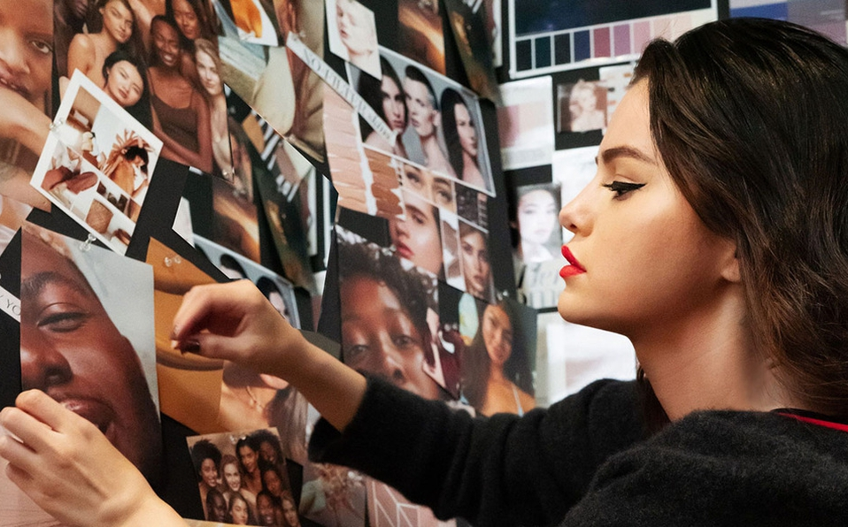
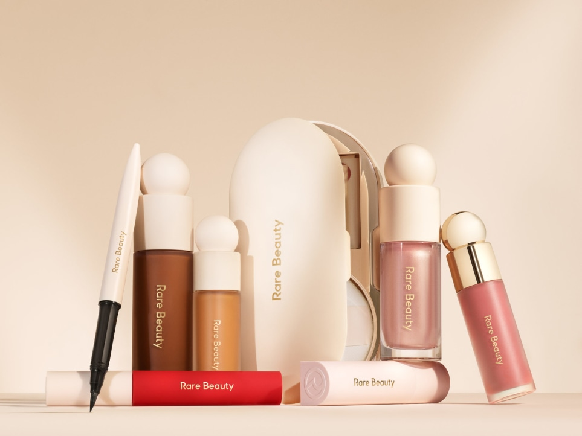
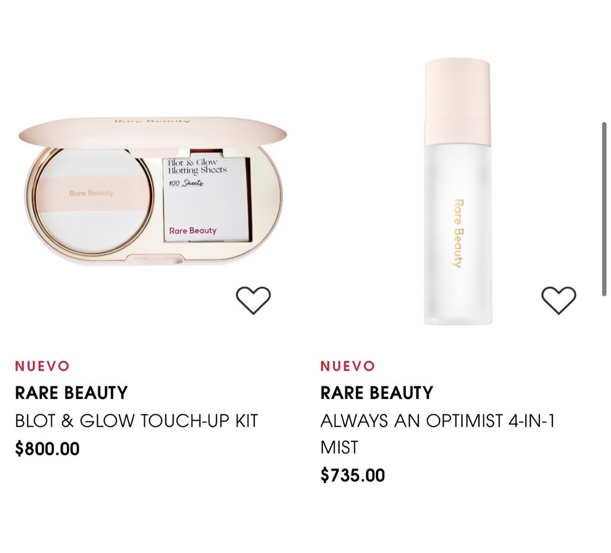
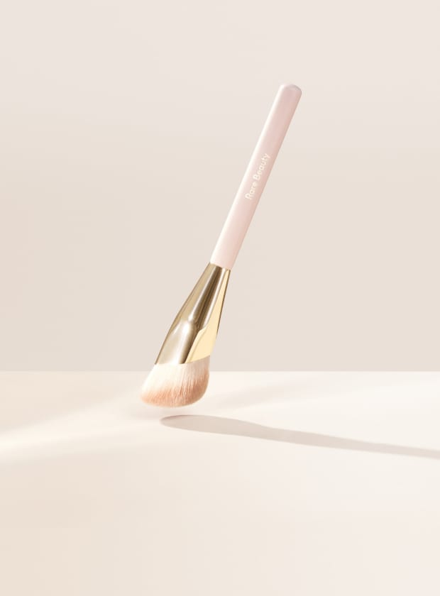

La cantante y actriz lanzó en enero su álbum 'Rare' y este martes anunció el lanzamiento oficial de su línea de maquillaje 'Rare Beauty'. La cantante norteamericana reveló a sus seguidores de Instagram que ha trabajado en este proyecto "por dos años" y que podrán encontrar los productos en las tiendas Sephora.
Productos

Desde correctores e iluminadores líquidos hasta primer facial, delineador para ojos y el producto estrella del que todos hablan: la base de maquillaje a la venta en más de 40 tonos para piel, que la cantante de Ice Cream usa como parte de su rutina de belleza diaria.Rare Beauty es uno de los lanzamientos más esperados de 2020 para las amantes de la belleza y, sobre todo, para las fans de Selena Gomez. Y no es para menos porque, aunque todavía no sabemos cómo será la colección, el trasfondo de la marca tiene muy buena pinta. Por ejemplo, esto es lo que escribían en una de las primeras publicaciones del Instagram de la firma: "Nuestra fundadora @selenagomez cree que todo el mundo es único y raro. Pero hoy, demasiadas personas se sienten atrapadas por expectativas poco realistas que son imposibles de lograr. @rarebeauty va de aceptar quién eres y de encontrar la belleza en tus imperfecciones".
Se sugiere que antes de aplicar la base de maquillaje de Rare Beauty prepares tu piel con un buen hidratante y primer. Luego, agita el producto las veces que sea necesario hasta asegurar que los pigmentos del mismo estén dispersos en una fórmula ligera.Usa dicha base de maquillaje en en la frente, mejilla y barbilla, con la ayuda de una brocha mojada o con la punta de tus dedos. Ello dependerá del acabado que estés buscando. Finalmente, aplica una segunda capa donde sea necesario para lograr una cobertura impecable. De ahí esta base sea una de las mejores para cubrir cualquier imperfección.

Las alternativas varían en gustos y precios, sin embargo, Selena Gomez recomienda usar su brocha, que es específica para dicha base de maquillaje. Se trata de una brocha que es libre de crueldad animal, ya que está hecha de sedosas cerdas que dan forma, difuminan y definen. Al ser esponjosa, cubre cualquier textura sobre el rostro (líquida, en polvos y/o cremas), con la precisión de un profesional.

